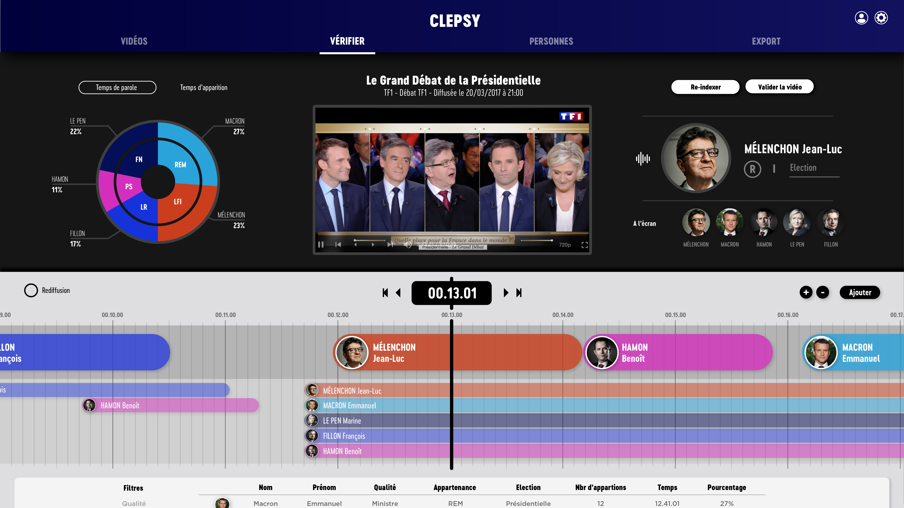

Web application to track political pluralism using artifical intelligence.
In many countries, political pluralism is respected on television in order to give an equal speech time to most of the political parties. To achieve this, the audiovisual regularatory authorities rely on a quantitative count of the time spent by political figures on the various programs on each TV channels. In France, given the large number of broadcasters, each media has the responsability to realise the counting and communicating it to the regularatory institution. Nowdays, the tracking process is very long and rebarbative.
The goal is to propose a user-friendly experience for the conformity team in order to help them accomplish their mission. We would like to pre-process the videos and establish a first count of speaking time with artificial intelligence. Then the team would juste have, in an optimised interface, to verify and validate the proposed results.
www.clepsy.io